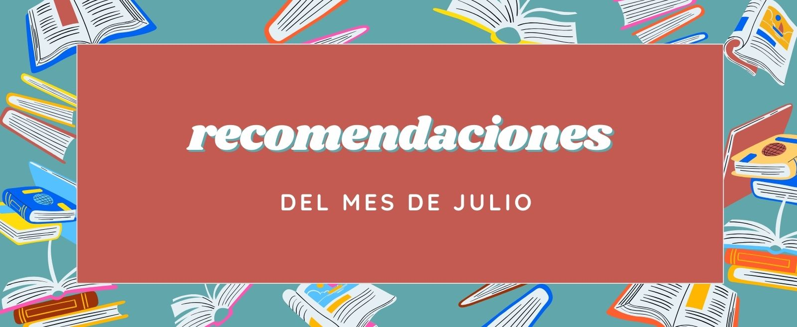
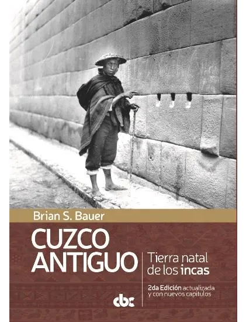
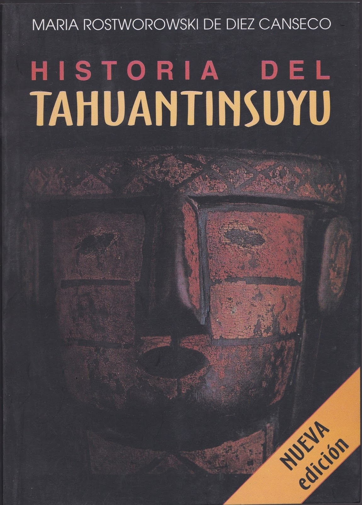
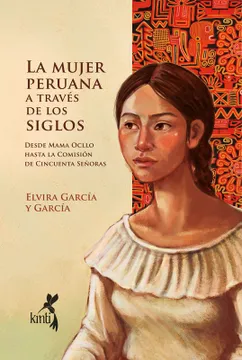
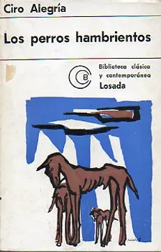

libros que todo pequeño debe leer🧸
Aquí tienes una lista de libros que pueden ser maravillosos para los niños, estimulando su imaginación, valores y amor por la lectura...


La literatura peruana es rica y diversa, abarcando una amplia gama de estilos, épocas y temas que reflejan tanto la historia como la cultura de Perú. Aquí te dejo algunas recomendaciones de libros representativos de la literatura peruana junto con un breve resumen de cada uno:
Cuzco antiguo - Tierra Natal de los incas 2ED.

Autor: Brian S. Bauer
En este libro, Brian S. Bauer presenta un panorama completo de la historia de la región de Cuzco, desde el arribo de los primeros cazadores y recolectores (hacia 5000 a.C.) hasta la caida del Estado Inca (1532 d.C.). Basado en más de 35 años de trabajo en la región, y escrito tanto para académicos como para el público en general, el libro es considerado como el mejor resumen del trabajo arqueológico de la tierra natal de los incas.
Historia del Tahuantinsuyu

Autora:María Rostworowski
Historia del Tahuantinsuyu es, probablemente, el libro de historia más leído de los últimos tiempos en el Perú. En su lectura, la autora explica el surgimiento y el apogeo del Estado Inca, así como los principales aspectos organizativos que sirvieron de base para el ejercicio del poder y el funcionamiento de la producción económica. Con la rigurosidad que la caracteriza, la autora discute con la historia tradicional y propone una de las imágenes más sólidas sobre nuestro pasado andino.
La mujer Peruana a través de los siglos

Autora: Elvira García y García
La historia de las mujeres del Perú cobra vida en este libro monumental escrito por Elvira García y García, una destacada educadora y escritora de principios del siglo XX. A lo largo de varios años de investigación y escritura, la autora se sumerge en el pasado para reconstruir la historia de las ancestras y rescatar sus voces y experiencias. A través de testimonios orales, documentos históricos y fuentes impresas, Elvira García y García reconstruye un pasado donde las mujeres son protagonistas. Su enfoque único nos revela una historia femenina que ha sido en gran medida silenciada, pero que merece ser contada y celebrada. Por eso, este libro es un testimonio conmovedor y valioso que nos conecta con nuestro pasado y nos impulsa a construir un futuro más justo y equitativo.
Los perros hambrientos

Autor: Ciro Alegría
En sus páginas late el drama del hombre y la tierra, de la sequía y el hambre, aproximándose al mayor problema del hombre peruano: la propiedad de la tierra, su lucha diaria por vencer la agreste naturaleza y la dificultad de las relaciones humanas entre las desproporciones que determinan los papeles antagónicos de agua-sequía, blanco-indio, pobreza-riqueza, cosmovisión occidental- cosmovisión andina. Todo ello estableciendo dos mundos paralelos, el de los hombres y el de los perros, que ante el hambre no dudan en matarse devorarse entre ellos.
Aquí tienes una lista de libros que pueden ser maravillosos para los niños, estimulando su imaginación, valores y amor por la lectura...

En este mes de Agosto, hemos seleccionado nuevas y emocionantes historias que merecen ser leídas...

"El Alquimista" de Paulo Coelho es una novela inspiradora que sigue a Santiago, un joven pastor andaluz que sueña repetidamente con un tesoro escondido en las pirámides de Egipto. Decidido a seguir su sueño, deja su vida en España y emprende un viaje...